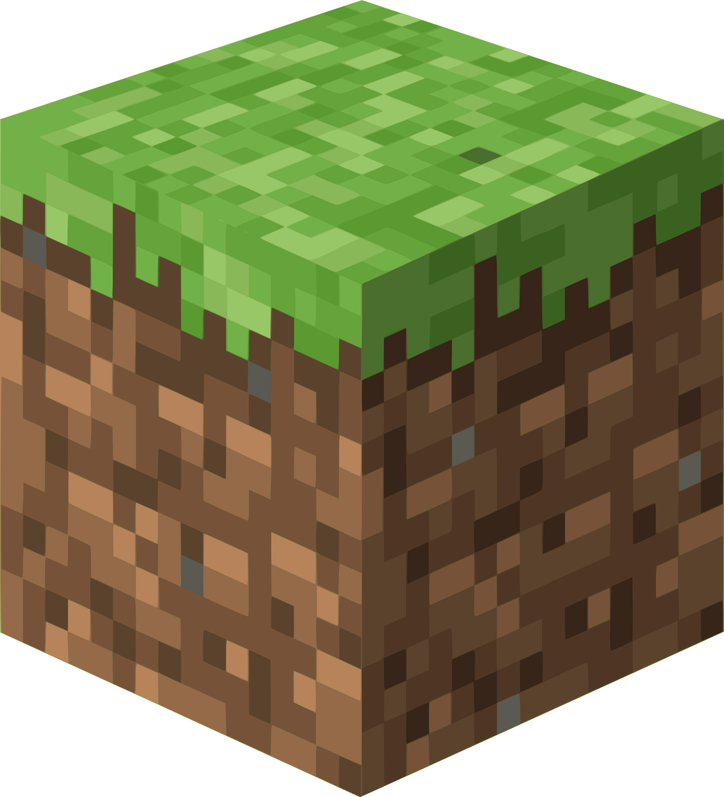

Sodium


A high-performance rendering engine replacement for Minecraft.
This exact mod is for 26.1.2 version of minecraft
Get nowMod menu

Adds a mod menu to view the list of mods you have installed.
This exact mod is for 26.1.2 version of minecraft
Get nowBactro Mod

Fullbright, low fire, low shield and more all in one mod!
This exact mod is for 26.1.2 version of minecraft
Get nowApple skin
Food/hunger-related HUD improvements
This exact mod is for 26.1.2 version of minecraft
Get now